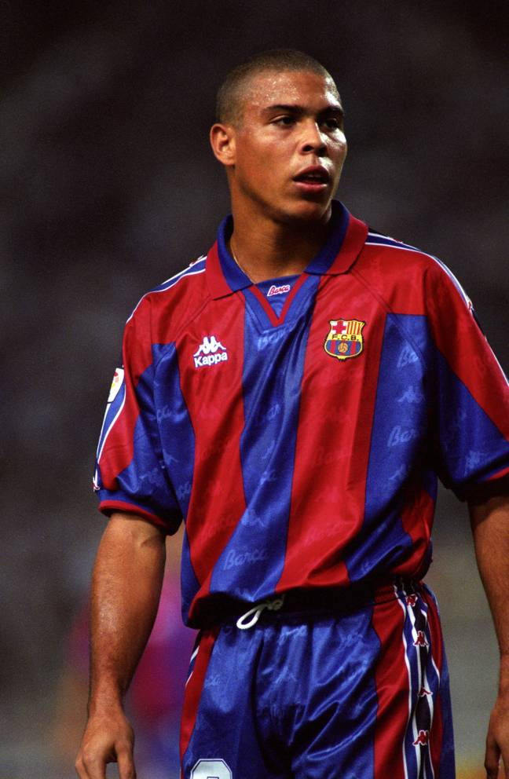
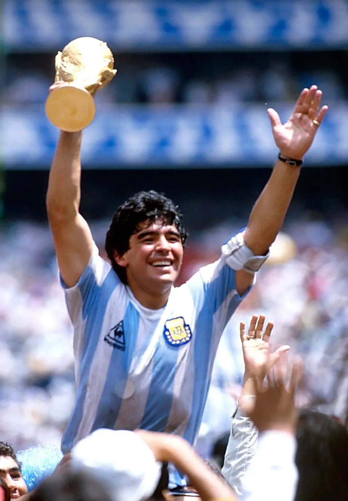
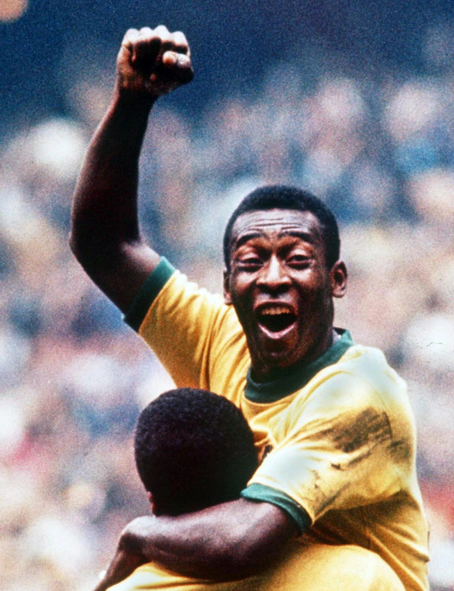
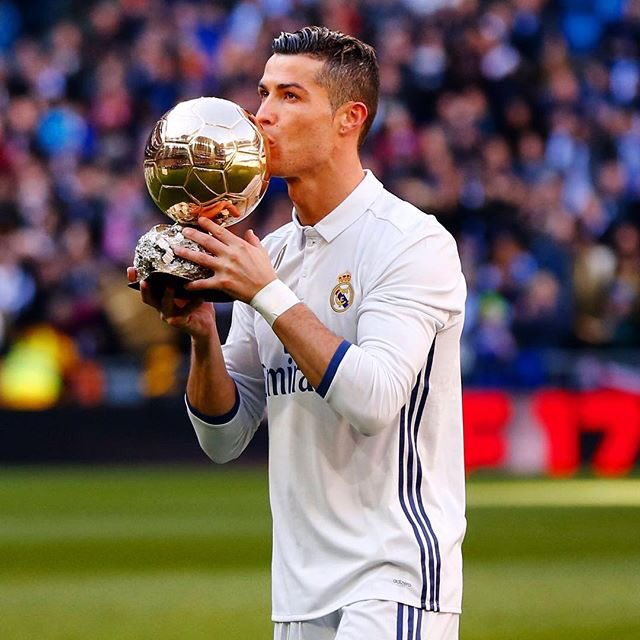
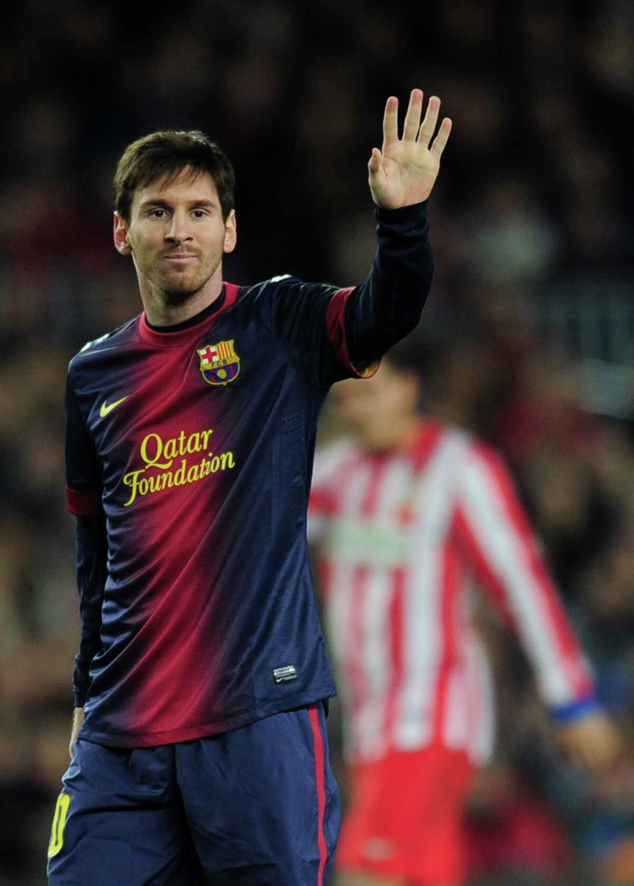

Footy Goats!
Footy's Top 5 Greatest Players Off All Time
In the realm of football's rich history, a select group of extraordinary individuals have transcended the boundaries of time and space, leaving an indelible mark on the beautiful game. These five legends, whose names are etched in the annals of football lore, represent the pinnacle of skill, passion, and dedication. Each one is a unique virtuoso, leaving a lasting legacy that continues to inspire and captivate fans around the world. Join us as we embark on a journey to celebrate the top 5 best players of all time, whose contributions to the sport have elevated them to legendary status.
Legendary R9
In the grand tapestry of football history, only a handful of players have managed to etch their names in the annals of greatness. Among the select few who have graced the beautiful game with their extraordinary talent, Ronaldo Luís Nazário de Lima, affectionately known as R9, stands proudly at number five in the list of the greatest footballers of all time.
When one thinks of R9, the mind conjures images of sheer brilliance, lightning-fast sprints, and breathtaking goals. His mesmerizing style of play left defenders in a perpetual state of awe and left football fans across the globe utterly captivated.
Ronaldo's career was a symphony of success, starting from his early days in Brazil, where he emerged as a teenage sensation at Cruzeiro before dazzling Europe with his exceptional talents at PSV Eindhoven and later at Barcelona. His time at Barcelona was marked by goals of sheer genius, a testament to his innate ability to find the back of the net with the slightest of ease.
However, it was his time at Inter Milan that truly solidified his legendary status. In the iconic Nerazzurri jersey, R9's dazzling performances reached their zenith. The Brazilian striker was an unstoppable force, his pace, skill, and clinical finishing made him one of the most feared strikers in the world. He won the FIFA World Player of the Year award twice during his tenure with Inter, a testament to his exceptional skill and goal-scoring prowess.
And let's not forget his triumphant return to Spain with Real Madrid, where he played alongside another footballing giant, Zinedine Zidane. Their partnership was a dream for football aficionados, and R9's performances at the Santiago Bernabeu further solidified his status as a footballing legend.
Injuries may have curtailed his career's longevity, but R9's impact on the sport was indelible. His style of play has influenced countless generations of aspiring footballers, with his sublime dribbling, blinding speed, and lethal finishing ability still serving as a source of inspiration.
As we reflect on the top five best players of all time, it's hard to deny R9's rightful place among the immortals of football. His legacy is not just a chapter in the history of the game; it's a testament to the artistry and magic that only a select few can conjure on the pitch. Ronaldo Luís Nazário de Lima, R9, is and forever will be, a living legend in the pantheon of football's greatest.
The Enigmatic Genius
Diego Maradona, the enigmatic and electrifying Argentine football icon, secures his place at number four in the pantheon of football's all-time greats. Maradona's story is not just a tale of talent; it's a saga of magic, controversy, and unwavering passion that continues to captivate fans worldwide.
Born in a humble neighborhood of Buenos Aires, Maradona rose from modest beginnings to become a global phenomenon. His journey through the world of football was a rollercoaster of emotions, marked by moments of sheer brilliance and occasional turbulence, all of which combined to create a character like no other.
Maradona's name is synonymous with two contrasting yet equally unforgettable moments. In the 1986 FIFA World Cup, held in Mexico, he produced a series of mesmerizing performances that cemented his place in history. The "Hand of God" goal, followed by the "Goal of the Century" against England in the quarter-finals, remains etched in the collective memory of football fans.
His dribbling skills were unparalleled, and his ability to maneuver through a sea of defenders left spectators awestruck. Maradona was not just a player; he was an artist with the ball at his feet.
Beyond the World Cup glory, Maradona's club career was no less impressive. He enjoyed spells at renowned clubs like Barcelona and Napoli, where he became a cult figure. It was at Napoli that Maradona achieved legendary status by leading the team to two Serie A titles, a Coppa Italia, and a UEFA Cup, defying the dominance of northern Italian clubs.
However, Maradona's career was also marked by controversies and battles off the pitch. His struggles with addiction and personal demons often overshadowed his footballing achievements. Yet, through it all, his fans remained devoted, and his legacy remained intact.
Diego Maradona's legacy is not merely about records and statistics, but about the indomitable spirit and the sheer joy he brought to the game. His impact transcends borders, and his influence can be seen in the artistry of countless footballing talents who followed in his footsteps.
As we celebrate the top four greatest football players of all time, Maradona's place is not just about goals and titles; it's about the passion and flair that he brought to the pitch. He was a flawed genius, a magician, and a true embodiment of the essence of the beautiful game. Diego Maradona, number four among the greatest, forever lives on in our hearts and memories.
The World Cup's Best Player
In the illustrious pantheon of the world's greatest footballers, Pelé, the iconic Brazilian legend, stands tall as the number three in our rankings. His name is synonymous with excellence, and his extraordinary career continues to inspire generations of football enthusiasts around the globe.
Pelé's journey from the streets of Brazil to the grandest stages of international football is the stuff of legends. Hailing from humble beginnings, he emerged as a precocious talent, captivating audiences with his remarkable skill and innate footballing intelligence.
What sets Pelé apart is not just his incredible ability to score goals but his all-around brilliance on the pitch. His style was a harmonious blend of creativity, finesse, and power. As a forward, he had it all—impeccable dribbling, lethal finishing, and a deep understanding of the game's nuances.
The most enduring chapter in Pelé's storied career was undoubtedly his exceptional performances in the FIFA World Cup. He became a household name during the 1958 World Cup in Sweden, where, as a teenager, he announced his arrival with a flurry of goals and led Brazil to victory. Pelé's World Cup heroics were not confined to that tournament alone; he went on to win two more World Cups in 1962 and 1970, further solidifying his status as a football immortal.
Pelé's club career was equally remarkable. He spent the majority of his career with Santos in Brazil, helping the team to numerous domestic and international titles. His brief but impactful stint with the New York Cosmos in the North American Soccer League also contributed to the growth of football in the United States.
Beyond his on-field achievements, Pelé was an ambassador for the sport. His persona exuded charm and charisma, making him a beloved figure worldwide. He was not just a footballer; he was a global icon.
As we celebrate the top three greatest football players of all time, Pelé's place in the hierarchy is unquestionable. His impact on the sport extends beyond his incredible statistics and extends to the hearts of millions of football lovers. Pelé, the enduring symbol of excellence, remains a beacon of inspiration for aspiring footballers and a testament to the magic of the beautiful game. His legacy is not just a memory but a living testament to the everlasting allure of football.
The King Off The UCL
In the illustrious history of football, only a select few have managed to transcend the boundaries of time and etch their names into the annals of the sport. Cristiano Ronaldo, often referred to as CR7, stands firmly as the second in our list of the greatest footballers of all time. His extraordinary journey from a budding talent to an all-time legend is nothing short of remarkable.
Born on the island of Madeira, Portugal, Cristiano Ronaldo's story is one of unwavering determination, unparalleled work ethic, and a relentless pursuit of perfection. From his early days at Sporting Lisbon to his meteoric rise at Manchester United, CR7's talent was undeniable, and he quickly emerged as a force to be reckoned with.
At Manchester United, Ronaldo's blend of speed, skill, and goal-scoring prowess left fans in awe. He played an instrumental role in the club's success, helping them secure three Premier League titles and a UEFA Champions League trophy. It was during this period that he began to garner international recognition, earning his first FIFA World Player of the Year award in 2008.
However, his journey to greatness didn't stop there. A high-profile move to Real Madrid in 2009 saw Ronaldo achieve unprecedented levels of success. His goal-scoring exploits reached incredible heights, breaking records and rewriting the history books. He became the club's all-time leading scorer and helped lead Real Madrid to four UEFA Champions League titles in just five years.
But it's not just about the goals; it's about the drive to be the best. Ronaldo's relentless pursuit of excellence, his athleticism, and his adaptability have set new standards in modern football. His sensational move to Juventus in 2018 demonstrated that his desire for success knows no bounds, conquering Italy's Serie A and continuing to score goals at a remarkable rate.
Beyond the club level, Ronaldo's international achievements are equally impressive. He has been the pillar of the Portuguese national team, leading them to victory in the 2016 UEFA European Championship and the 2019 UEFA Nations League.
So, is this the end of Neymar's career? The answer remains shrouded in the mists of uncertainty. What we can be sure of, however, is the unwavering hope of fans that Neymar will find his way back to the pitch, where his talent, passion, and determination will once again illuminate the grandest stages of the beautiful game. The world watches, waits, and keeps Neymar in its thoughts as he embarks on his road to recovery.
CR7's impact extends far beyond the pitch. His dedication to fitness, discipline, and professionalism has set a precedent for aspiring footballers. He has also become a global icon, using his platform to advocate for important causes and charitable work.
As we reflect on the top five greatest football players of all time, Cristiano Ronaldo's place as the second-best is undeniable. His career is a testament to the enduring pursuit of excellence, and his impact on the game is immeasurable. He embodies the essence of the beautiful game and continues to inspire millions worldwide. Cristiano Ronaldo, a second to none, remains a living legend among the immortals of football.
The Supreme Maestro of Football
In the grand theater of football history, one name shines brighter than all others, standing at the zenith of the sport's pantheon. Lionel Messi, the Argentine maestro, secures his rightful place as the number one among the greatest footballers of all time. His journey from a young boy in Rosario to a global phenomenon is a narrative of extraordinary talent, unwavering commitment, and a genius that defies description.
Lionel Messi's rise to stardom is a testament to his innate footballing brilliance. From his humble beginnings at Newell's Old Boys to his transformative move to Barcelona's La Masia academy, Messi's talent was evident from a tender age. At Barcelona, he evolved into a footballing deity, captivating the world with his mesmerizing dribbles, impeccable vision, and extraordinary goal-scoring feats.
In a storied career at Barcelona, Messi collected a plethora of individual awards, including an astonishing eight Ballon d'Or titles, symbolizing his unmatched dominance on the pitch. He led Barcelona to numerous La Liga titles and UEFA Champions League triumphs, redefining the possibilities of what one player could achieve with a single club.
Messi's style of play is poetry in motion. His dribbling skills are otherworldly, leaving defenders bewildered and fans ecstatic. His precise passes seem telepathic, finding teammates with pinpoint accuracy. And when it comes to scoring goals, Messi's record is nothing short of astounding, consistently topping the charts as one of the most prolific goal-scorers in the history of the game.
But it's not just about his remarkable abilities. Messi's impact transcends statistics. His humility, sportsmanship, and dedication to his craft set him apart. He is not just a footballer but a symbol of inspiration for countless youngsters looking to follow in his footsteps.
Messi's influence extends beyond his club career, as he has been the linchpin of the Argentine national team. Leading his country to victory in the 2021 Copa America and the 2022 World Cup, he quenched his and his nation's thirst for international success.
As we celebrate the top five greatest football players of all time, there is no doubt that Lionel Messi is the undisputed number one. His legacy is not just about records and titles; it's about the magic he brings to the field every time he steps onto it. Messi is a living testament to the beauty of the sport, and his name will forever be synonymous with football greatness.
In the grand narrative of the beautiful game, Lionel Messi is the numero uno, the ultimate embodiment of footballing excellence, and his story will continue to inspire generations to come.